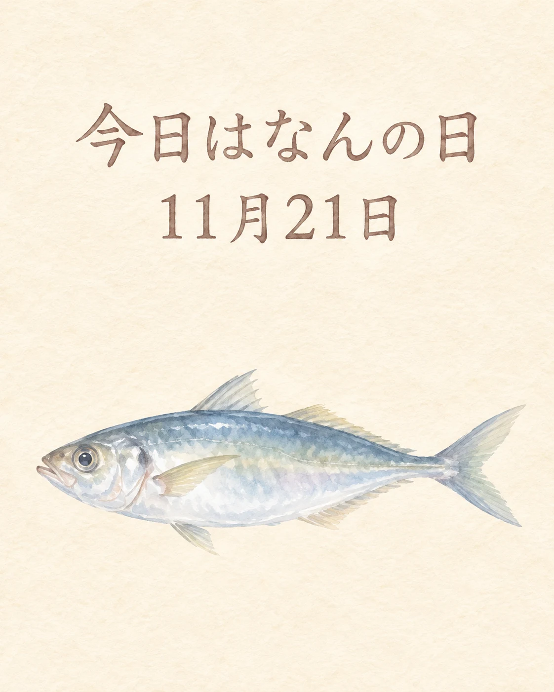

11月21日は「世界漁業デー」です🐟
1997年、ニューデリーに集まった18か国の漁業関係者が、持続可能な漁業を目指す宣言をまとめたことに始まります。海や川の資源、そして漁業に携わる人々の仕事に目を向ける日です。
お造りや焼き魚、煮魚など、魚は和食に欠かせない存在。旬の一尾が食卓に届くまでには、獲る人、運ぶ人、選ぶ人の仕事がつながっています。ひと皿の向こうにある営みにも、感謝を込めて味わいたいですね。
季節の味わいとともに、心ほどけるひとときをお過ごしください✨
World Fisheries Dayと和食
世界漁業デー（World Fisheries Day）は毎年11月21日。FAOの2026年案内と南アフリカ政府の当年案内でも日付を確認しました。インド政府広報局は、1997年の漁業関係者の国際的な集まりに由来すると説明しています。国連が制定した日と断定せず、漁業を支える人々と資源を考える日としてご紹介します。
2026年のFAO・ILO関連行事は11月20日に開催された案内があり、記念日そのものの11月21日とは区別しています。当店がこれらの行事を主催・協賛・参加する告知ではありません。
魚料理を支える仕事に目を向ける食文化の記事です。画像は象徴的な生成イラストで、当日の入荷魚・料理・価格を示すものではありません。
出典：FAO・World Fisheries Day、南アフリカ政府・2026年案内、インド政府広報局・由来の説明（2026年11月21日確認）。